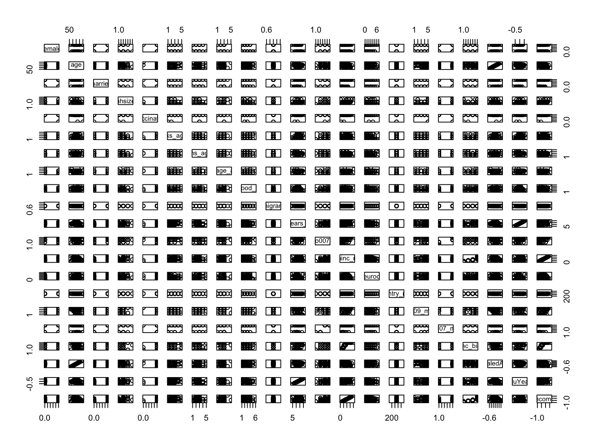
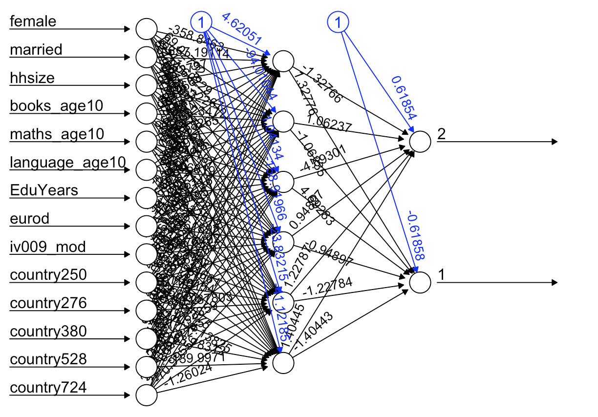
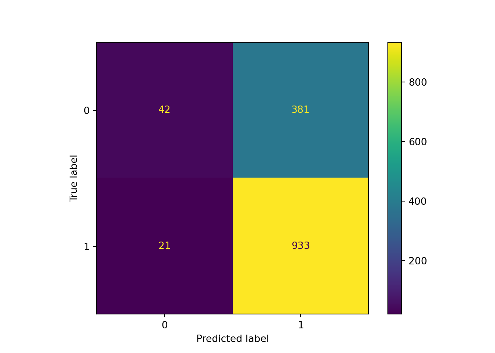

rm(list = ls()) # this line cleans your Global Environment.
setwd("/Users/lucas/Documents/UNU-CDO/courses/ml4p/ml4p-website-v2") # set your working directory
# do not forget to install neuralnet and scales, which are packages we haven't used before
library(tidyverse) # our favourite data wrangling ackagy
library(neuralnet) # a package specific for neural networks
library(scales) # to control the appearance of axis and legend labels
library(skimr) # dataset summary
# import data
load("data/SHARE_DATA.rda")
## Notice that we're using the load() function, this is because the dataset is in .rda format, the standard R dataset format
## Put it into a structure with an easy name, the remove the original
z <- easySHARE_rel8_0_0
rm(easySHARE_rel8_0_0)An Introduction to Neural Networks
What are neural networks?
In this session, Prof. Dr. Robin Cowan will give is an intuitive introduction to neural networks. He has also prepared an exercise using data from SHARE, the Survey of Health, Ageing and Retirement in Europe. Please watch his video-lesson to get the intuition behind neural network algorithms and you can then follow policy-relevant application: predicting income-vulnerable older people in Europe.
Why would being able to predict what will make an older person struggle financially be policy-relevant?
This is a discussion point that you can explore. But you might want to investigate what the average old-age pension is in some European countries, and what the average cost of living is. After working for more than half of your life, I’m sure you’d like to live comfortably…
Practical Example
As always, start by opening the libraries that you’ll need to reproduce the script below.
Unfortunately, we are unable to share the dataset ourselves. However, if you wish to replicate this exercise at home (and use one of the many target variables that Robin has proposed to see how our model fares for those), you can request access to the dataset by creating an account with SHARE. You’ll need to specify this is for learning purposes, but you won’t be denied it.
You can explore the dataset now (and refer to the SHARE website if you have any questions about the variables).
names(z) [1] "mergeid" "hhid" "coupleid"
[4] "wave" "wavepart" "int_version"
[7] "int_year" "int_month" "country"
[10] "country_mod" "language" "female"
[13] "dn002_mod" "dn003_mod" "dn004_mod"
[16] "age" "birth_country" "citizenship"
[19] "iv009_mod" "q34_re" "isced1997_r"
[22] "eduyears_mod" "mar_stat" "hhsize"
[25] "partnerinhh" "int_partner" "age_partner"
[28] "gender_partner" "mother_alive" "father_alive"
[31] "siblings_alive" "ch001_" "ch021_mod"
[34] "ch007_hh" "ch007_km" "sp002_mod"
[37] "sp003_1_mod" "sp003_2_mod" "sp003_3_mod"
[40] "sp008_" "sp009_1_mod" "sp009_2_mod"
[43] "sp009_3_mod" "books_age10" "maths_age10"
[46] "language_age10" "vaccinated" "childhood_health"
[49] "sphus" "chronic_mod" "casp"
[52] "euro1" "euro2" "euro3"
[55] "euro4" "euro5" "euro6"
[58] "euro7" "euro8" "euro9"
[61] "euro10" "euro11" "euro12"
[64] "eurod" "bfi10_extra_mod" "bfi10_agree_mod"
[67] "bfi10_consc_mod" "bfi10_neuro_mod" "bfi10_open_mod"
[70] "hc002_mod" "hc012_" "hc029_"
[73] "maxgrip" "adlwa" "adla"
[76] "iadla" "iadlza" "mobilityind"
[79] "lgmuscle" "grossmotor" "finemotor"
[82] "recall_1" "recall_2" "orienti"
[85] "numeracy_1" "numeracy_2" "bmi"
[88] "bmi2" "smoking" "ever_smoked"
[91] "br010_mod" "br015_" "ep005_"
[94] "ep009_mod" "ep011_mod" "ep013_mod"
[97] "ep026_mod" "ep036_mod" "co007_"
[100] "thinc_m" "income_pct_w1" "income_pct_w2"
[103] "income_pct_w4" "income_pct_w5" "income_pct_w6"
[106] "income_pct_w7" "income_pct_w8" ## and how big it is
dim(z) [1] 412110 107# ==== we can also use our trusted skimr package ==== #
# skim(z)
# =================================================== #
# Remember to take out the hashtag to print the command! 1. Data Preparation
Now we are going to clean up some things in the data to make it useful.
- Select a subset of the countries: Spain, France, Italy, Germany, Poland. These are identified in the data with numbers:
Spain 724; France 250; Italy 380; Germany 276; NL 528; Poland 616
countries <- c(724, 250, 380, 276, 528, 616)In the dataset, negative numbers indicate some kind of missing data, so we will replace them with NA (R-speak for missing values).
We then select years since 2013 (let’s focus on the most recent cohorts)
Restrict our data to observations that have certain qualities: we want people who are retired (ep005 ==1).
z1 <- z %>%
filter(country_mod %in% countries )%>% # this line subsets the z dataset to only the countries we're interested in (expressed in the line above)
mutate(across(everything(), function(x){replace(x, which(x<0), NA)})) %>% # this line replaces all values across the entire dataframe that are less than 0 to NA (missing)
filter(int_year >=2013) %>% # now we're subsetting the dataset to the years 2013 and after
filter(ep005_ == 1) # and finally, keeping only people old enought for retirementAt this point you should have decreased the number of observation by 366431 (new obs. = 45679). z1 now contains a cleaner version of the dataset (feel free to delete z)
PS. The following symbols %>% are called pipe operators. They belong to the dplyr packaged, which is masked within the tidyverse. They allow you to indicate a series of actions to do to the object in a sequence, just as above.
Now let’s create some variables for our model
## Create the variable migrant
## change the nature of married to a dummy variable
## change the nature of our vaccination variable to zero or 1
z1 <- z1 %>%
mutate(migrant = ifelse(birth_country==country,0,1)) %>%
mutate(married=ifelse((mar_stat==1 | mar_stat==2),1,0))%>%
mutate(vaccinated=ifelse(vaccinated==1,1,0))At this point we should have 109 variables (because we created two new variables and rewrote 1.
Select the variables we want in the analysis
To access the full survey with variable definitions, here’s a link to the PDF in English.
## get rid of crazy income values (the people with high income are not not part of our population of interest (regular folks who need to save for retirement))
## and make our dependent variable (co007, which is whether the household struggles to make ends meet) a factor
z1 <- z1 %>%
dplyr::select(female,age,married,hhsize,vaccinated,books_age10,maths_age10,language_age10,childhood_health,migrant,eduyears_mod,co007_,thinc_m,eurod,country_mod,iv009_mod) %>%
filter(thinc_m < 100000)%>% # people earning above 100,000 are excluded
mutate(co007_ = as.factor(co007_)) What is our target variable?
In the English Questionnaire of the SHARE dataset, the variable asks:
Thinking of your household’s total monthly income, would you say that your household is able to make ends meet…
- With great difficulty
- With some difficulty
- Fairly easily
- Easily
Let’s work with this variable to turn this into a classification problem.
## aggregate income struggle variable into 2 categories and add to our data
z1$co007_mod <- z1$co007_ # here we're just creating a duplicate of the co007_ variable but with a different name
# it's usually a good idea to manipulate a duplicated variable in case you make a mistake and need to call on the original/untransformed data again
z1$co007_mod[z1$co007_ %in% c(1,2)] <- 1 # if the values in var z1$co007_ are 1 or 2, transform them into 1, store this in our new z1$co007_mod variable
z1$co007_mod[z1$co007_ %in% c(3,4)] <- 2 # if the values in var z1$co007_ are 3 or 4, transform them into 2, store this in our new z1$co007_mod variable
## change the way to factor is defined to have only 2 levels
z1$co007_mod <- as.factor(as.integer(z1$co007_mod))Now we have a variable that indicates whether a household struggles (1) or doesn’t struggle (2) to make ends meet.
A different dependent variable could just be income. To make that sensible we make income bands (or ‘bins’): var thinc_m directly asks annual salary.
# we're creating quartiles (to which income quartile do you belong, given your annual salary? the lowest? the highest?)
z1$inc_bin = cut(z1$thinc_m,quantile(z1$thinc_m,breaks=c(0,0.25,0.5,075,1),na.rm=T))We won’t work with the inc_bin (classification) variable, but it’s there if you wish to challenge yourself to create a neural network model for it.
Cleaning missing values (recall ML needs a full dataset)
## get rid of any observation that contains NA
sum(is.na(z1))[1] 140821#You can get a glimpse of which variables have the most missing values with the skim() function
skim(z1)| Name | z1 |
| Number of rows | 37286 |
| Number of columns | 18 |
| _______________________ | |
| Column type frequency: | |
| factor | 3 |
| numeric | 15 |
| ________________________ | |
| Group variables | None |
Variable type: factor
| skim_variable | n_missing | complete_rate | ordered | n_unique | top_counts |
|---|---|---|---|---|---|
| co007_ | 623 | 0.98 | FALSE | 4 | 4: 12700, 3: 12382, 2: 8843, 1: 2738 |
| co007_mod | 623 | 0.98 | FALSE | 2 | 2: 25082, 1: 11581 |
| inc_bin | 318 | 0.99 | FALSE | 4 | (2.: 9322, (1.: 9321, (3.: 9321, (0,: 9004 |
Variable type: numeric
| skim_variable | n_missing | complete_rate | mean | sd | p0 | p25 | p50 | p75 | p100 | hist |
|---|---|---|---|---|---|---|---|---|---|---|
| female | 0 | 1.00 | 0.47 | 0.50 | 0.0 | 0.00 | 0.00 | 1.00 | 1.0 | ▇▁▁▁▇ |
| age | 2 | 1.00 | 73.32 | 7.86 | 42.2 | 67.20 | 72.30 | 78.80 | 102.3 | ▁▃▇▃▁ |
| married | 208 | 0.99 | 0.71 | 0.45 | 0.0 | 0.00 | 1.00 | 1.00 | 1.0 | ▃▁▁▁▇ |
| hhsize | 0 | 1.00 | 2.02 | 0.88 | 1.0 | 2.00 | 2.00 | 2.00 | 10.0 | ▇▁▁▁▁ |
| vaccinated | 29307 | 0.21 | 0.93 | 0.25 | 0.0 | 1.00 | 1.00 | 1.00 | 1.0 | ▁▁▁▁▇ |
| books_age10 | 24733 | 0.34 | 1.85 | 1.11 | 1.0 | 1.00 | 1.00 | 3.00 | 5.0 | ▇▃▂▁▁ |
| maths_age10 | 25127 | 0.33 | 2.80 | 0.85 | 1.0 | 2.00 | 3.00 | 3.00 | 5.0 | ▁▃▇▂▁ |
| language_age10 | 25161 | 0.33 | 2.81 | 0.81 | 1.0 | 2.00 | 3.00 | 3.00 | 5.0 | ▁▃▇▂▁ |
| childhood_health | 29173 | 0.22 | 2.33 | 1.03 | 1.0 | 1.00 | 2.00 | 3.00 | 6.0 | ▇▅▁▁▁ |
| migrant | 250 | 0.99 | 1.00 | 0.00 | 1.0 | 1.00 | 1.00 | 1.00 | 1.0 | ▁▁▇▁▁ |
| eduyears_mod | 2542 | 0.93 | 10.21 | 4.44 | 0.0 | 7.00 | 10.00 | 13.00 | 25.0 | ▃▇▇▂▁ |
| thinc_m | 0 | 1.00 | 25379.33 | 16076.56 | 0.0 | 14357.39 | 21731.12 | 32783.51 | 99829.1 | ▇▇▂▁▁ |
| eurod | 1485 | 0.96 | 2.57 | 2.31 | 0.0 | 1.00 | 2.00 | 4.00 | 12.0 | ▇▃▂▁▁ |
| country_mod | 0 | 1.00 | 434.20 | 184.53 | 250.0 | 276.00 | 380.00 | 616.00 | 724.0 | ▇▃▂▂▃ |
| iv009_mod | 1269 | 0.97 | 3.68 | 1.34 | 1.0 | 3.00 | 4.00 | 5.00 | 5.0 | ▂▂▃▆▇ |
# we'll use the drop_na() function, which will delete any row if it has at least one missing value (be careful when doing this in your own data cleaning)
z2 <- drop_na(z1)
dim(z2)[1] 6881 18# z2 is a small subset of the original dataset which contains i) no missing values, ii) only relevant variables for our model on retirement, and iii) a more manageable dataset sizeRescaling data
## age, years of education and income (thinc_m) have a big range, so let's rescale it to between plus and minus 1
## scaling allows us to compare data that aren't measured in the same way
z4 <- z2 %>%
mutate(ScaledAge = rescale(age,to=c(-1,1)))%>%
mutate(EduYears=rescale(eduyears_mod,to=c(-1,1)))%>%
mutate(income = rescale(thinc_m,to=c(-1,1)))
# z4 is now the working dataset, with 3 more (scaled) variables
## check what we have
summary(z4$ScaledAge) Min. 1st Qu. Median Mean 3rd Qu. Max.
-1.00000 -0.16230 0.01222 0.04492 0.22862 1.00000 ## check what variables we now have in the data
names(z4) [1] "female" "age" "married" "hhsize"
[5] "vaccinated" "books_age10" "maths_age10" "language_age10"
[9] "childhood_health" "migrant" "eduyears_mod" "co007_"
[13] "thinc_m" "eurod" "country_mod" "iv009_mod"
[17] "co007_mod" "inc_bin" "ScaledAge" "EduYears"
[21] "income" ## let's look at the data just to see if there is anything observable at the start
## plot the first 100 observations
## we will use a pairs plot
plot(head(z4,100))
# you can use the zoom function of the image if you're replicating this script locally (that way you can read the variable names).
## look more closely at migrant and vaccination (the others seem to have a good spread)
table(z4$migrant)
1
6881 ## there is only one value so no point in including it
## look at vaccination
table(z4$vaccinated)
0 1
367 6514 Select a subset of the data, including only relevant variables
z5 <- z4 %>%
dplyr::select(female,married,hhsize,books_age10, maths_age10, language_age10, EduYears,eurod, country_mod,iv009_mod, inc_bin, co007_,co007_mod)Notice that we create new datasets everytime we subset, instead of rewriting the old one. This is probably a good idea in case we need to take a step back.
To be able to work with the neuralnet package, it’s best to have dummy variables instead of one variable with various categories. So, let’s start that process:
## now change country to dummy variables
country <- as.factor(z5$country_mod)
cmat <- model.matrix(~0+country)The model.matrix() function takes a formula and a data frame (or similar structure) and returns a matrix with rows corresponding to cases and columns to predictor variables.
## add to z5
z5 <- cbind(z5,cmat)
head(z5) female married hhsize books_age10 maths_age10 language_age10 EduYears
104800 1 1 2 1 3 3 -0.12
104803 0 1 2 1 2 3 -0.12
104808 1 1 2 1 3 3 0.12
104812 0 1 2 1 3 3 -0.04
104816 0 1 2 1 3 3 0.20
104852 0 0 1 3 4 3 -0.12
eurod country_mod iv009_mod inc_bin co007_ co007_mod
104800 5 276 5 (1.44e+04,2.17e+04] 2 1
104803 5 276 5 (1.44e+04,2.17e+04] 2 1
104808 3 276 5 (3.28e+04,9.98e+04] 4 2
104812 0 276 5 (3.28e+04,9.98e+04] 4 2
104816 4 276 4 (3.28e+04,9.98e+04] 4 2
104852 3 276 4 (1.44e+04,2.17e+04] 2 1
country250 country276 country380 country528 country724
104800 0 1 0 0 0
104803 0 1 0 0 0
104808 0 1 0 0 0
104812 0 1 0 0 0
104816 0 1 0 0 0
104852 0 1 0 0 0class(z5)[1] "data.frame"To finalise the data preparation, let’s do some variable cleaning:
## fix level names of inc_bin
levels(z5$inc_bin) <- c("first","second","third","fourth")
names(z5) [1] "female" "married" "hhsize" "books_age10"
[5] "maths_age10" "language_age10" "EduYears" "eurod"
[9] "country_mod" "iv009_mod" "inc_bin" "co007_"
[13] "co007_mod" "country250" "country276" "country380"
[17] "country528" "country724" 2. Model Preparation
This time around, we’re not using caret functions to split our data, or define our target and predictors. We’ll do this “manually”. The first thing we want to do, is create and object of the form [target ~ x1 + x2 + …+ xk]. This is how R reads target variables (on the left hand side of the squiggle) and predictors (on the right hand side of the squiggle and separated by + signs).
Prepare model
## now make the formula we want to estimate
myform0 <- paste(names(z5)[c(1:8,10,14:18)],collapse=" + ")
# the object myform0 contains all the predictor variables for our neural network model
myform <- paste( "co007_mod",c(myform0),sep=" ~ ")
all.equal(myform,myform0) # returns one mistmatch.[1] "1 string mismatch"# myform includes the income variable as a predictor, so it's all our previous predictors + co007_mod (as target!)
## look at the formula to make sure we got what we wanted
print(myform)[1] "co007_mod ~ female + married + hhsize + books_age10 + maths_age10 + language_age10 + EduYears + eurod + iv009_mod + country250 + country276 + country380 + country528 + country724"Data Split: train and test
## set the random seed so we can duplicate things if we want to
set.seed(4)
# we're doing this manually, instead of using our trusted caret() package
trainRows <- sample(1:nrow(z5),0.8*nrow(z5)) # 80% of data to train
testRows <- (1:nrow(z5))[-trainRows]
## now we have training data: trainz5; and testing data: testz5
trainz5 <- z5[trainRows,]
testz5 <- z5[testRows,]Train our neural network model!
set.seed(4)
model <- neuralnet(
myform, ## use the formula we defined above
data = trainz5, ## tell it what data to use
hidden=c(6), ## define the number and size of hidden layers: here we have one layer with 5 nodes in it
linear.output = F, # F to show this is a classification problem (since our predictor is a factor) T returns a linear regression output. This also means that the (default) activation function is the sigmoid!
stepmax = 1000000, ## how many iterations to use to train it (1 million, but it converges before that mark)
lifesign="full", ## get some output while it works
algorithm = "rprop+", # it is a gradient descent algorithm "Resilient Propagation".
learningrate.limit = NULL,
learningrate.factor =
list(minus = 0.5, plus = 1.2),
threshold = 0.01
)hidden: 6 thresh: 0.01 rep: 1/1 steps: 1000 min thresh: 1.22795192815468
2000 min thresh: 0.408629618104168
3000 min thresh: 0.255375732991587
4000 min thresh: 0.255375732991587
5000 min thresh: 0.206075288342767
6000 min thresh: 0.181738092119449
7000 min thresh: 0.142443872190076
8000 min thresh: 0.108056969567729
9000 min thresh: 0.0965760103945601
10000 min thresh: 0.0924441234865121
11000 min thresh: 0.0924441234865121
12000 min thresh: 0.0924441234865121
13000 min thresh: 0.0903834987550307
14000 min thresh: 0.0903834987550307
15000 min thresh: 0.0903834987550307
16000 min thresh: 0.0903834987550307
17000 min thresh: 0.0903834987550307
18000 min thresh: 0.0903834987550307
19000 min thresh: 0.0903834987550307
20000 min thresh: 0.0903834987550307
21000 min thresh: 0.0903834987550307
22000 min thresh: 0.0903834987550307
23000 min thresh: 0.0903834987550307
24000 min thresh: 0.0903834987550307
25000 min thresh: 0.0903834987550307
26000 min thresh: 0.0903834987550307
27000 min thresh: 0.0903834987550307
28000 min thresh: 0.0903834987550307
29000 min thresh: 0.0903834987550307
30000 min thresh: 0.0903834987550307
31000 min thresh: 0.0903834987550307
32000 min thresh: 0.0903834987550307
33000 min thresh: 0.0903834987550307
34000 min thresh: 0.0903834987550307
35000 min thresh: 0.0903834987550307
36000 min thresh: 0.0903834987550307
37000 min thresh: 0.0903834987550307
38000 min thresh: 0.0903834987550307
39000 min thresh: 0.080031973683847
40000 min thresh: 0.080031973683847
41000 min thresh: 0.080031973683847
42000 min thresh: 0.0781654073237371
43000 min thresh: 0.077217534035844
44000 min thresh: 0.077217534035844
45000 min thresh: 0.0663306621049722
46000 min thresh: 0.0663306621049722
47000 min thresh: 0.0663306621049722
48000 min thresh: 0.0663306621049722
49000 min thresh: 0.0640628426880909
50000 min thresh: 0.0549832161036877
51000 min thresh: 0.0549832161036877
52000 min thresh: 0.0549832161036877
53000 min thresh: 0.0535065197695844
54000 min thresh: 0.0451843906210169
55000 min thresh: 0.0407706834064874
56000 min thresh: 0.0407706834064874
57000 min thresh: 0.0407706834064874
58000 min thresh: 0.0407706834064874
59000 min thresh: 0.0407706834064874
60000 min thresh: 0.0398750949182902
61000 min thresh: 0.0347740947416519
62000 min thresh: 0.0347740947416519
63000 min thresh: 0.0347740947416519
64000 min thresh: 0.0333526116102184
65000 min thresh: 0.0333526116102184
66000 min thresh: 0.0333526116102184
67000 min thresh: 0.0333526116102184
68000 min thresh: 0.0333526116102184
69000 min thresh: 0.0316000239700686
70000 min thresh: 0.0306565221261171
71000 min thresh: 0.0274365035081705
72000 min thresh: 0.0274365035081705
73000 min thresh: 0.026496818727535
74000 min thresh: 0.026496818727535
75000 min thresh: 0.026496818727535
76000 min thresh: 0.026496818727535
77000 min thresh: 0.026496818727535
78000 min thresh: 0.026496818727535
79000 min thresh: 0.026496818727535
80000 min thresh: 0.026496818727535
81000 min thresh: 0.0259845739797748
82000 min thresh: 0.0259845739797748
83000 min thresh: 0.0259845739797748
84000 min thresh: 0.0240579990735271
85000 min thresh: 0.0226252873882434
86000 min thresh: 0.0226252873882434
87000 min thresh: 0.0221455597930601
88000 min thresh: 0.0221455597930601
89000 min thresh: 0.0221455597930601
90000 min thresh: 0.0221455597930601
91000 min thresh: 0.0203603362622581
92000 min thresh: 0.0200746219013495
93000 min thresh: 0.0200746219013495
94000 min thresh: 0.0200746219013495
95000 min thresh: 0.0200746219013495
96000 min thresh: 0.0200746219013495
97000 min thresh: 0.0163554171793395
98000 min thresh: 0.0163554171793395
99000 min thresh: 0.0163554171793395
1e+05 min thresh: 0.0151167048702273
101000 min thresh: 0.0151167048702273
102000 min thresh: 0.0151167048702273
103000 min thresh: 0.0151167048702273
104000 min thresh: 0.0151167048702273
105000 min thresh: 0.0151167048702273
106000 min thresh: 0.0151167048702273
107000 min thresh: 0.0151167048702273
108000 min thresh: 0.0151167048702273
109000 min thresh: 0.0142885225751462
110000 min thresh: 0.0142885225751462
111000 min thresh: 0.0142885225751462
112000 min thresh: 0.0142885225751462
113000 min thresh: 0.0142885225751462
114000 min thresh: 0.0142885225751462
115000 min thresh: 0.0142455799962317
116000 min thresh: 0.0142455799962317
117000 min thresh: 0.0142455799962317
118000 min thresh: 0.012107497406225
119000 min thresh: 0.012107497406225
120000 min thresh: 0.012107497406225
121000 min thresh: 0.012107497406225
122000 min thresh: 0.012107497406225
123000 min thresh: 0.0108934985445289
124000 min thresh: 0.0108934985445289
125000 min thresh: 0.0108934985445289
126000 min thresh: 0.0108934985445289
127000 min thresh: 0.0108934985445289
128000 min thresh: 0.0108934985445289
129000 min thresh: 0.0108934985445289
130000 min thresh: 0.0108934985445289
131000 min thresh: 0.0108934985445289
132000 min thresh: 0.0108934985445289
133000 min thresh: 0.0108934985445289
134000 min thresh: 0.0108934985445289
135000 min thresh: 0.0108934985445289
136000 min thresh: 0.0108934985445289
137000 min thresh: 0.0101758648461206
138000 min thresh: 0.0101758648461206
139000 min thresh: 0.0101758648461206
140000 min thresh: 0.0101758648461206
141000 min thresh: 0.0101758648461206
142000 min thresh: 0.0101758648461206
143000 min thresh: 0.0101758648461206
143866 error: 944.06645 time: 5.7 mins# if you get an error, don't worry about it. It's not an issue for our estimation, and it indicates the last iteration (way before 1000000)Now, let’s plot our neural network:
plot(model)
# notice that this is a vanilla network (no deep learning for us!).

Now it is time to test our model’s predictive abilities.
# use our fitted neural network to try to predict what the income states in our test data
set.seed(4)
pred <- predict(model,testz5)As before, we will not use the caret package to call the ConfusionMatrix function, we’ll do all of it manually. We’ll have to manipulate the variables a little, to visualise the confusion matrix in a helpful way:
# add the levels from our target variable as labels (stored in an object)
myLabels <- levels(testz5$co007_mod)
pointPred <- max.col(pred) # find the index of the maximum value of my predictions
pointPred <- myLabels[pointPred] # add the labels (or column names from our predictions)
# Now, we'll store the actual/observed values in an objext as well:
actual <- testz5$co007_mod
actual <- as.factor(as.integer(actual))
# Create the Confusion Matrix using the predicted, observed values and the labels
t1 <- table(actual,pointPred)
# voilà! manual confusion matrix!
print(t1) pointPred
actual 1 2
1 134 259
2 114 870Now that we have a confusion matrix, we can analyse the performance of our neural network model.
# How many older people struggle to make ends meet?
prop.table(table(testz5$co007_mod))
1 2
0.2854031 0.7145969 # about 28%...
# How accurate is our model?
sum(diag(t1))/sum(t1)[1] 0.7291213# this returns the proportion of correct predictions!
# 72% of correctly predicted income status
# so, our neural network model does relatively well in predicting whether older people / pensioneers struggle to make ends meet in selected European countriesIf we recall from previous sessions, it is hard to have accurate predictions of that of which we have less (struggling older people)… look again at the confusion matrix: what do we see? the ratio of correct predictions for non-strugglers (2x2) is higher than for the strugglers (1x1).
Let’s remember what information we can obtain from a confusion matrix:
True Positives (TP): 134 (actual = 1, predicted = 1)
False Negatives (FN): 259 (actual = 1, predicted = 2)
False Positives (FP): 114 (actual = 2, predicted = 1)
True Negatives (TN): 870 (actual = 2, predicted = 2)
Based on these confusion matrix values (and the formulas provided in session 2: logistic classification), we can get our neural network model’s performance metrics:
Accuracy: 72.9%. (we got this above!). It is the proportion of true results regardless of the case.
Recall (Sensitivity): 34.09% (we might want to know this, since we’re trying to identify vulnerable elderly people). It is the proportion of correctly identified vulnerable cases. The formula (if you want to check yourself) is TP/(TP+FN) = 134/(134+259) = 0.340
Alternatively…
# select the needed values from the confusion matrix t1
(t1[1,1])/(t1[1,1]+t1[1,2])[1] 0.3409669#==== Python version: 3.10.12 ====#
# Opening libraries
# scikit-learn
import sklearn as sk # our trusted Machine Learning library
from sklearn.model_selection import train_test_split # split the dataset into train and test
from sklearn.metrics import accuracy_score, confusion_matrix, precision_score, recall_score, ConfusionMatrixDisplay # returns performance evaluation metrics
from sklearn.neural_network import MLPClassifier
# non-ML libraries
import numpy as np # a library for numeric analysis
import random # for random state
import csv # a library to read and write csv files
import pandas as pd # a library to help us easily navigate and manipulate dataframes
import seaborn as sns # a data visualisation library
import matplotlib.pyplot as plt # a data visualisation library
from scipy.stats import randint # generate random integer
from graphviz import Digraph
# Uploading data
SHARE = pd.read_csv('/Users/lucas/Documents/UNU-CDO/courses/ml4p/ml4p-website-v2/data/SHARE_subset.csv')1. Overview of the data
Let’s take a quick look at what the dataset looks like.
# let's start with the general dimensions and variable names
print(SHARE.shape)(6881, 19)# and variable names (comma separated)
print(', '.join(SHARE.columns))Unnamed: 0, female, married, hhsize, books_age10, maths_age10, language_age10, EduYears, eurod, country_mod, iv009_mod, inc_bin, co007_, co007_mod, country250, country276, country380, country528, country724# finally, missing values (best be sure!)
SHARE.isnull().sum() # this sums all missing values per vector/variableUnnamed: 0 0
female 0
married 0
hhsize 0
books_age10 0
maths_age10 0
language_age10 0
EduYears 0
eurod 0
country_mod 0
iv009_mod 0
inc_bin 0
co007_ 0
co007_mod 0
country250 0
country276 0
country380 0
country528 0
country724 0
dtype: int64We have \(19\) variables and \(6,881\) observations and no missing values in the dataset. Let’s tackle the variables now: Unnamed:0 is an ID tag, nothing to worry about. Then, we’ve got some traditional variables in socioeconomic analysis: female (or gender), married (or marriage status) hhsize (household size), and a few indicators about the person’s educational past: books maths and language at age 10. These questions ask about a person’s reading, maths and language performance when they were 10 years old (arguably a good proxy for educational relevance in the household, and thus a predictor of future employment… but take this statement with a grain of very salty salt). EduYears directly asks how many years a person studied, formally. The next variables are quite interesting: eurod is a depression scale, country_mod indicates where in Europe the person lives (Spain 724; France 250; Italy 380; Germany 276; NL 528; Poland 616); similarly, the variables country* are dummies generated from the country_mod variable. And finally, the target variable(s): inc_bin was created by Robin, and it indicates whether a person is in the first, second, third, or fourth income quartile. We will work with co007_ and co007_mod (which was generated from the previous variable). Both variables refer to income struggles:
In the English Questionare of the SHARE dataset, the co007_ variable asks:
Thinking of your household’s total monthly income, would you say that your household is able to make ends meet…
- With great difficulty
- With some difficulty
- Fairly easily
- Easily
Which Robin then recoded into a binary variable that takes on the value 1 if the person struggles to make ends meet at 2 otherwise (co007_mod). By doing so, he’s turned the task into a simple classification model with neural networks.
2. Data Split and Fit
# let's quickly look at the location of the relevant variables
SHARE.info()<class 'pandas.core.frame.DataFrame'>
RangeIndex: 6881 entries, 0 to 6880
Data columns (total 19 columns):
# Column Non-Null Count Dtype
--- ------ -------------- -----
0 Unnamed: 0 6881 non-null int64
1 female 6881 non-null int64
2 married 6881 non-null int64
3 hhsize 6881 non-null int64
4 books_age10 6881 non-null int64
5 maths_age10 6881 non-null int64
6 language_age10 6881 non-null int64
7 EduYears 6881 non-null float64
8 eurod 6881 non-null int64
9 country_mod 6881 non-null int64
10 iv009_mod 6881 non-null int64
11 inc_bin 6881 non-null object
12 co007_ 6881 non-null int64
13 co007_mod 6881 non-null int64
14 country250 6881 non-null int64
15 country276 6881 non-null int64
16 country380 6881 non-null int64
17 country528 6881 non-null int64
18 country724 6881 non-null int64
dtypes: float64(1), int64(17), object(1)
memory usage: 1021.5+ KB
# X = female + married + hhsize + books_age10 + maths_age10 + language_age10 + EduYears + eurod + iv009_mod + country250 + country276 + country380 + country528 + country724
# Y = co007_mod
X = SHARE.iloc[:, list(range(1, 9)) + [10] + list(range(14, 19))] # since our range is discontinuous, we've used a combination of list() and range() to indicate which elemenets from the larger dataset we want contained in X. Also note that range has a start (1 here, so the second position) and and end (with the same example, 9 here, 10th position). Whilst the start is inclusive, the end is exclusive. Which means that the range will only capture elements 1 through 8. That's why the second range works even though we only have 18 variables ;).
y = SHARE.iloc[:, 13] # y is a vector containing our target variable, which is in position 13 of the dataframe
# Split data into train and test
X_train, X_test, y_train, y_test = train_test_split(X, y, test_size=0.2, random_state=12345) # random_state is for reproducibility purposesNow, let’s fit a Neural Network model:
# Initialise the MLPClassifier (or Multilayer Perceptron Classifier).
# Despite the name indicating this type of neural network is used for deep learning, it can also be used for simpler classification "vanilla network" tasks
nn_mlp = MLPClassifier(hidden_layer_sizes=(6,), max_iter=100000, activation='logistic', solver='sgd', random_state=12345) # the solver we're using here is the stochastic gradient descent. This is not what we used in the R practical, but there's no equivalent with the scikit-learn package, so if you peak over there, you might find some differences :).
# Train the model
nn_mlp.fit(X_train, y_train)MLPClassifier(activation='logistic', hidden_layer_sizes=(6,), max_iter=100000,
random_state=12345, solver='sgd')In a Jupyter environment, please rerun this cell to show the HTML representation or trust the notebook. On GitHub, the HTML representation is unable to render, please try loading this page with nbviewer.org.
MLPClassifier(activation='logistic', hidden_layer_sizes=(6,), max_iter=100000,
random_state=12345, solver='sgd')# Predictions on the test dataset
# Something I haven't mentioned before is that the predictions are deterministic based on the random state from the initialised model
pred = nn_mlp.predict(X_test)
# Evaluation of overall the model
Accuracy = accuracy_score(y_test, pred)
print(f"Overall Accuracy of our model: {Accuracy}, not bad!")Overall Accuracy of our model: 0.7080610021786492, not bad!It seems like we’re relatively good at predicting wether an older European citizen struggles economically. However, let’s explore our model a little more. We’ll start by taking a look at the proportions of strugglers and non-strugglers (our target variable):
# recall that 1 is struggle and 2 is no struggle
SHARE['co007_mod'].value_counts(normalize=True) # when you set normalize = True, you get proportions. False gives you the countsco007_mod
2 0.702514
1 0.297486
Name: proportion, dtype: float64So, about 29% struggle, and 70% do not. If we recall from previous sessions it is hard to have accurate predictions of that of which we have less… let’s plot a confusion matrix and evaluate the recall (sensitivity) of our model to see how good we are at predicting strugglers.
# visualising a confusion matrix
cm = confusion_matrix(y_test, pred)
print("Confusion Matrix:", cm)Confusion Matrix: [[ 42 381]
[ 21 933]]ConfusionMatrixDisplay(confusion_matrix=cm).plot() # create confusion matrix plot<sklearn.metrics._plot.confusion_matrix.ConfusionMatrixDisplay object at 0x30fe9faa0>plt.show() # display confusion matrix plot created above
So, the numbers have switched here: \(2\) is now \(1\) and \(1\) is now \(0\). Let’s have a trip back to memory lane and remember the values that a confusion matrix provides:
True Positives (TP): 42 (actual = 0, predicted = 0)
False Negatives (FN): 381 (actual = 0, predicted = 1)
False Positives (FP): 21 (actual = 1, predicted = 0)
True Negatives (TN): 933 (actual = 1, predicted = 1)
Based on these confusion matrix values (and the formulas provided in session 2: logistic classification), we can get our neural network model’s performance metrics.
Accuracy: 70%. (we got this above!). It is the proportion of true results regardless of the case. Recall (Sensitivity): 35.22% (we might want to know this, since we’re trying to identify vulnerable older people). It is the proportion of correctly identified vulnerable cases. The formula (if you want to check yourself) is TP/(TP+FN) = 42/(42+381) = 0.099.
Alternatively:
print("Recall:", recall_score(y_test, pred))Recall: 0.09929078014184398Conclusion
How did we do? Neural networks are all the rage these days, it’s arguably the most famous machine learning algorithm. But don’t be fooled, it is still subject to the same data challenges as the rest of the algorithms we have explored so far.
Readings
Optional Readings
- Chatsiou and Mikhaylov (2020). Deep Learning for Political Science. Arxiv preprint.
Copyright © 2025 Michelle González Amador & Stephan Dietrich. All rights reserved.